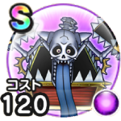

キングミミック
まほうのカギと竜の秘宝こころ最大コスト+4じゅもんダメージ+7%イオ属性じゅもんダメージ+8%スキルの暴走ダメージ+5%ターン開始時MPを10回復する / 9.0点
くわしい特徴
【ランク特殊効果】 こころ最大コスト+4じゅもんダメージ+7%イオ属性じゅもんダメージ+8%スキルの暴走ダメージ+5%ターン開始時MPを10回復する

まほうのカギと竜の秘宝こころ最大コスト+4じゅもんダメージ+7%イオ属性じゅもんダメージ+8%スキルの暴走ダメージ+5%ターン開始時MPを10回復する / 9.0点
【ランク特殊効果】 こころ最大コスト+4じゅもんダメージ+7%イオ属性じゅもんダメージ+8%スキルの暴走ダメージ+5%ターン開始時MPを10回復する